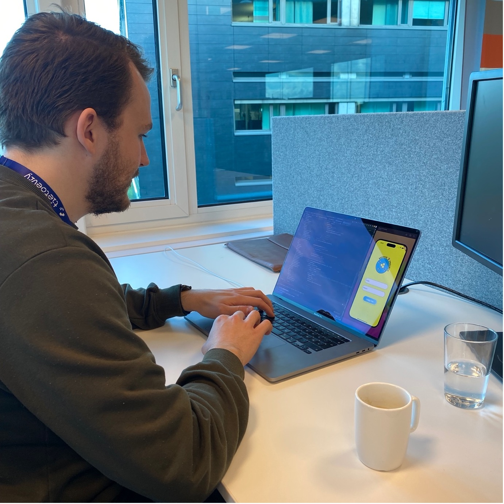
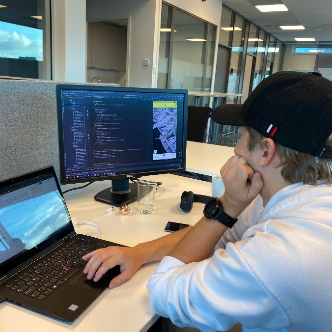

Vår praksis hos TietoEVRY
Marius sine tanker
Jeg heter Marius Sørensen Bakken, er 26 år gammel og jeg er i praksis hos TietoEVRY høsten 2022.
I praksisperioden min jobber jeg som konsulent for TietoEVRY på et ekte prosjekt for en lokal start-up kalt Beehive (Beehive). Arbeidet mitt går ut på å forbedre brukervennligheten og brukeropplevelsen i Beehive sin app. Arbeidet er hovedsakelig front end-basert og jeg jobber med kodespråket Flutter (Dart), som mesteparten av appen er skrevet i. Vi er også så heldige at TietoEVRY har fine lokaler på Kjøita rett utenfor Kristiansand sentrum der vi har fått tildelt faste kontorplasser, det er noe som føles veldig ekte og behagelig med å ha en fast «arbeidsplass» å dra til når man er i praksis.
Det jeg liker best å arbeide med i denne praksisperioden er designarbeidet. Vi har vært heldig å få lov til å ha stor innflytelse på utviklingen av appen og hvordan den skal se ut. Jeg syntes det er veldig spennende å få designe hvordan det skal se ut og samtidig utvikle systemet med kode for å få frem det produktet som kom frem i designprosessen. Det blir litt mer konkret og visuelt enn ren back end-utvikling, og det trives jeg veldig godt med. Jeg har også opparbeidet meg utrolig mye kunnskap om Flutter, et kodespråk jeg ikke hadde noe erfaring med fra tidligere.
Fra tidligere i studiet er det mange ting jeg kan trekke frem som har hjulpet meg i praksis. For eksempel har en generell forståelse av hvordan kode er strukturert har hjulpet meg med å sette meg inn i et helt nytt språk på kort tid. Arbeidet vårt er strukturert gjennom Scrum, og vi følger to-ukers Sprinter. Å strukturere arbeid med Scrum har vi gjort utallige ganger på studiet, så det har gjort overgangen til «ekte» Scrum veldig enkel, da jeg har en forståelse av konseptene som følger med.
Det morsomste med praksis tror jeg er når vi har Sprint Review, der vi viser frem til oppdragsgiver Beehive alt arbeidet vi har gjort de siste to ukene. Det er alltid litt skummelt, jeg skal tross alt bli dømt på arbeidet jeg har gjort for en ekte kunde. Men det er også veldig givende. Er ting bra får man en selvtillits-boost, og er det ting som må endres lærer man av det, og kan levere noe bedre neste gang. Vi har fått mye gode tilbakemeldinger på arbeidet vi har gjort gjennom perioden, og det er en veldig fin ting å føle at man har gjort en god jobb!

Lars sine tanker
Jeg heter Lars Blåsmo Husfloen, er 23 år gammel og er i praksis hos TietioEvry/Beehive dette semesteret.
For TietoEvry jobber jeg som konsulenter for et lokalt start-up kalt Beehive. Her går rollen min ut på å forbedre brukeropplevelsen til en applikasjon tidligere produsert av dem. Det jobbes kun med front-end biten med at det fikses på utseende og funksjoner til applikasjonen som ikke støtter seg på mer på back-end enn det som allerede lå til verks ved vår start på prosjektet. Front-enden til Beehive består av Flutter og dart og er derav det jeg jobber i.
Det som er spennende med å jobbe med et slikt prosjekt, er at det er et arbeid for et reelt produkt, noe som er ganske ulikt alt annet jeg har gjort til nå. Videre gir prosjektet meg god trening i å utvikle noe for primært mobil, og i et kodespråk jeg ikke hadde noe tidligere kunnskap til. Siden jeg er en person som liker å programmere er det veldig spennende å lære seg et nytt språk i et reelt prosjekt. Så derfor har jeg gjennom denne tiden lært svært mye om både dart og flutter. Samt om arbeid med Google maps, og generelt arbeid med geolokasjon i kode.
I starten av arbeidet mitt her hadde vi en designworkshop der jeg fikk god nytte for de kunnskapene jeg tokk til meg gjennom IS-104, hvor vi lagde blant annet en del brukerhistorier, prioriteringer, o.l. Dessuten tar vi i bruk scrum her, hvor vi jobber primært i 2 ukers sprinter. Scrum er jo et rammeverk vi hyppig har tatt i bruk i de fleste fag gjennom utdanningen. Videre har kodefagene vi har hatt hjulpet meg til å bli bedre på å både lese ukjent kode samt flinkere til å lære meg et nytt. Noe jeg har hatt svært godt nytte av.
Den følelsen man får gjennom å jobbe mot en løsning eller en forbedring i applikasjonen og så få det til. Siden vi jobber mye front-end kan man veldig fort se resultatet av arbeidet og det gir en veldig god følelse når man får det til og ser klare forbedringer. Dessuten har vi begge fått til svært mye jeg ikke trodde vi skulle klare når vi startet prosjektet, som i stor grad kommer av vår voksende kompetanse innen programmeringsspråket og generell kunnskap om prosjektet. Og det er noe som alltid gir en oppriktig god følelse.